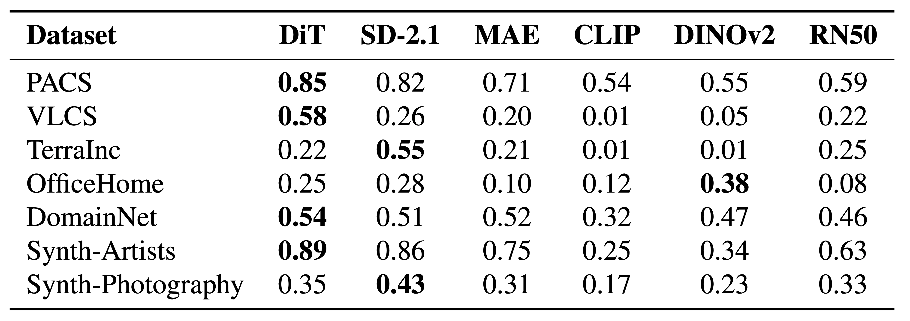
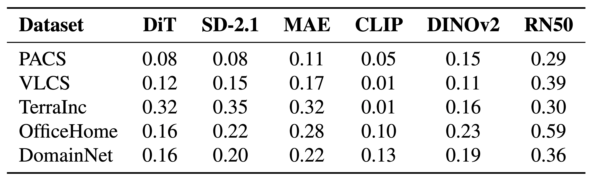

Method
Pseudo-Domain Discovery
Our method builds on the insight that domain-specific structure can be inferred from pre-trained features without requiring domain labels. We begin by identifying pseudo-domains via clustering in the latent space.


Quantifying Domain Separation
We quantify domain separation using the Normalized Mutual Information (NMI) score between cluster assignments
(with K = number of ground truth domains) and the corresponding domain labels. For example for the VLCS dataset shown below, we cluster with K = 4 and compute the NMI score between the cluster assignments and the domain labels.
In addition to Domain NMI scores, we also compute Class NMI scores in a similar fashion. This allows us to quantify the amount of class-specific information captured by the clusters.
Domain vs Class NMI
To obtain domain-specific centroids from the clusters, ideally we would need a feature space that captures domain-specific information while being invariant to class-specific information. We can quantify this using the NMI scores described above. The ideal feature space would have high domain NMI and a relatively lower class NMI.
Normalized Mutual Information (NMI) – Domain Labels ↑
Normalized Mutual Information (NMI) – Class Labels ↓
PACS: domain vs class NMI comparison.
VLCS: domain vs class NMI comparison.
TerraIncognita: domain vs class NMI comparison.
OfficeHome: domain vs class NMI comparison.
DomainNet: domain vs class NMI comparison.